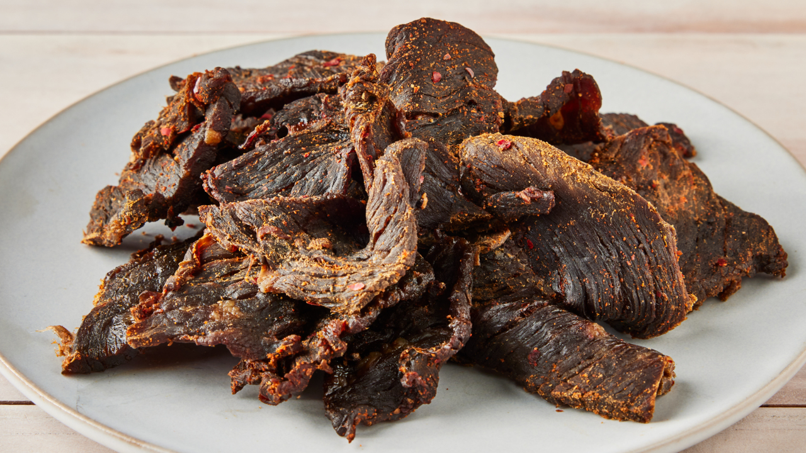

Homemade Beef Jerky

Description
This beef jerky recipe uses a relatively quick method. While you can find many artisan brands out there, making homemade beef jerky is fun, easy, and all the rage! Have your butcher slice the beef for you.
Ingredients
- 3/4 cup Worcestershire sauce
- 3/4 cup soy
- 1 tablespoon smoked paprika
- 2 tablespoon honey, or more to taste
- 2 tablespoons freshly ground black pepper
- 1 tablespoon red pepper flakes
- 1 tablespoon garlic powder
- 1 tablespoon onion powder
- 2 pounds beef top round, thinly sliced
Directions
- Whisk together Worcestershire sauce, soy sauce, smoked paprika, honey, black pepper, red pepper flakes, garlic powder, and onion powder in a large bowl. Add beef; mix until completely coated with marinade. Cover the bowl with plastic wrap and marinate in the refrigerator, 3 hours to overnight.
- Preheat the oven to 175 degrees F (80 degrees C). Line a baking sheet with aluminum foil and place a wire rack on top.
- Transfer beef to paper towels to dry. Discard marinade.
- Arrange beef slices in a single layer on the prepared wire rack on the baking sheet.
- Bake in the preheated oven until dry and leathery, 3 to 4 hours.
- Cut jerky with scissors into bite-sized pieces.
- Enjoy!
Nutritional Information
| Calories |
Fat |
Carbs |
Protein |
| 286 |
11g |
14g |
33g |